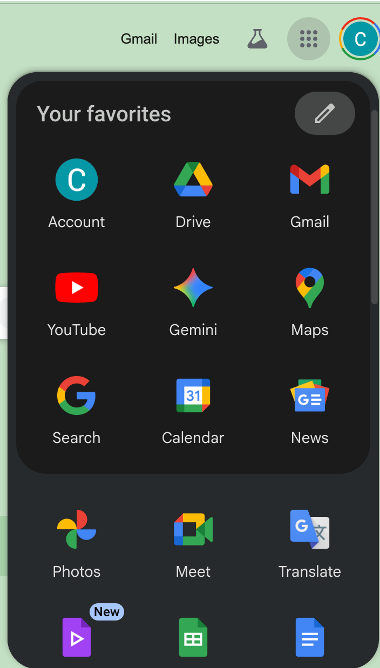

This session introduces the core concepts behind large language models,
effective prompt engineering, and responsible use of AI in research.
Use Your Harvard-Affiliated Google Account
Important: For this course, you must access Google Gemini using your
Harvard-affiliated Google account (e.g., yourname@g.harvard.edu).
Here's why:
Data Security: All data flows through Harvard's cyber-secure tunnel
and cannot be stored or used for training AI models.
Confidential Data: This protection allows you to upload
Level 3 confidential data, including:
Student work, grades, and academic records
Excel spreadsheets with internal financial data (as long as not linked to
personally identifying information)
Exclusions: Do not upload health records, sensitive
financial data linked to individuals, or other highly sensitive information.
Responsibility: As always, responsibility for all work products
and data handling rests with the user. Follow Harvard's data classification
and security policies.
Prerequisites
Before the session, please verify that you can access Google Gemini:
Go to google.com and sign in with your Harvard-affiliated Google account (e.g., yourname@g.harvard.edu)
Look for the 3×3 grid of dots (⋮⋮⋮) in the upper right corner of the page, next to your profile picture
Click on this grid to open the Google apps menu
Verify that you see a menu similar to the one shown below, with various Google apps including Gemini (the colorful star icon)

Figure 1: Google apps menu showing Gemini access
Important: If you don't see the 3×3 grid of dots, or if Gemini is not in your apps menu,
please contact the instructors before the session. You may need to enable certain Google services or
use a different Google account.
Accessing Google Gemini
For this session, we'll use Google's Gemini AI, which is accessible directly
from your web browser using your Harvard-affiliated Google account.
Note: Gemini may ask you to agree to terms of service when you first use it.
Review the terms, particularly regarding data usage and privacy, before proceeding.
Session Topics
In this session, we'll explore:
Effective PromptingTechniques for getting better results from AI assistants
Responsible AI UseBest practices for using AI in academic research, including attribution, verification, and limitations
Hands-on PracticeInteractive exercises using Google Gemini for research tasks
Google AI Tools Comparison
This course will focus on three Google AI tools, each with different strengths:
Tool
Best For
Key Features
When to Use
Gemini
General-purpose AI assistant
Conversational interface
Code generation
Multi-turn dialogue
Image understanding
Writing, brainstorming, coding, general questions
NotebookLM
Document analysis & research
Upload your own documents
Source-grounded responses
Automatic citations
Summarization & synthesis
Analyzing papers, synthesizing research, literature review
Gems
Custom AI assistants
Pre-configured prompts
Specialized personas
Reusable workflows
Task-specific optimization
Repetitive tasks, specific workflows, domain expertise